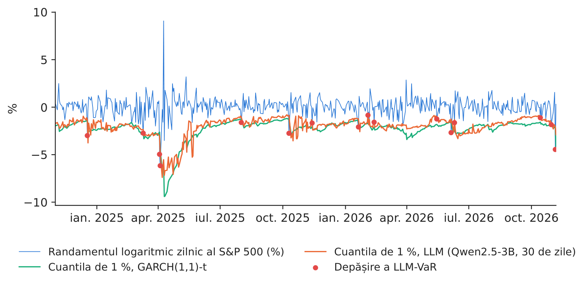
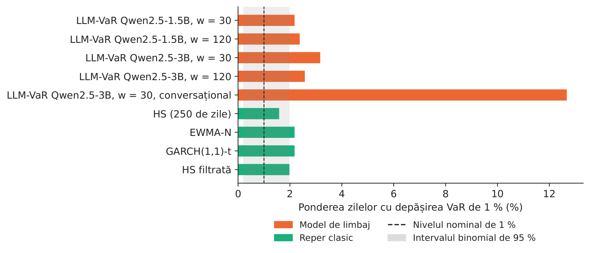
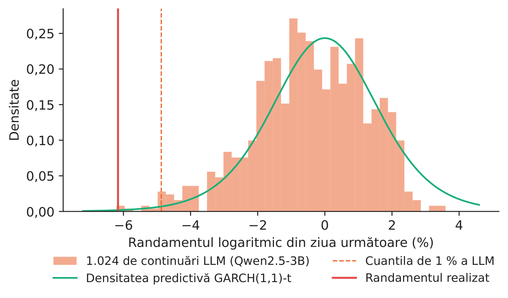
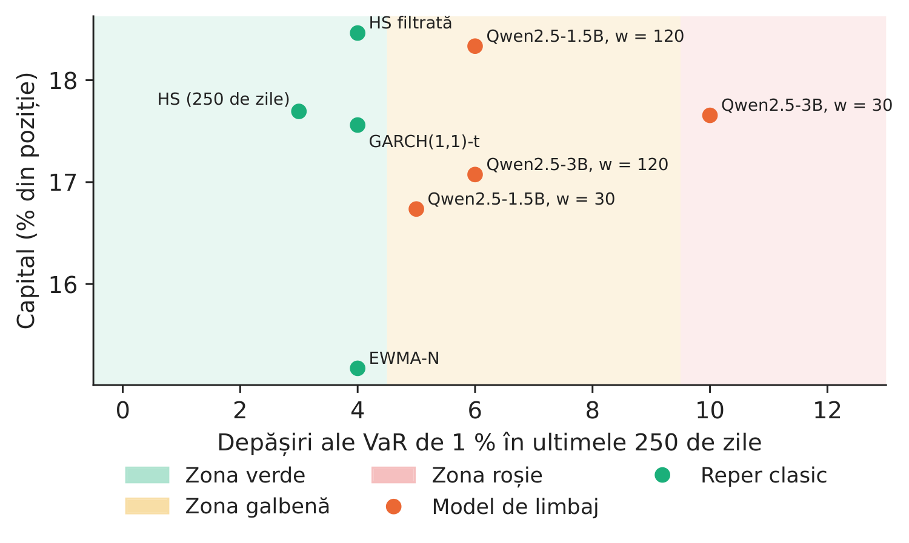

Studiul de caz 5 · Cursul 12
LLM-VaR și LLM-ES — poate un model de limbaj să măsoare riscul de piață?
Prof. dr. Daniel Traian PELE
Academia de Studii Economice din București, Departamentul de Statistică și Econometrie
Academia Română, Institutul de Prognoză Economică
Lucrarea de referință
Pele, D. T., Bolovăneanu, V., Lin, M.-B., Ren, R., Ginavar, A. T., Spilak, B., Andrei, A.-V., Toma, F.-M., Lessmann, S. și Härdle, W. K. (2026). In the beginning was the Word: LLM-VaR and LLM-ES. Expert Systems with Applications, 295, 128676. doi:10.1016/j.eswa.2025.128676
Problema decizională
Departamentul de risc de piață al unei bănci deține o poziție lungă pe indicele S&P 500. În fiecare seară trebuie să raporteze valoarea la risc (VaR, Value-at-Risk), adică pierderea care ar trebui depășită a doua zi doar cu probabilitatea de 1 %, și pierderea așteptată în coada distribuției (ES, Expected Shortfall), adică pierderea medie din zilele în care VaR este depășită. Autoritatea de supraveghere compară trimestrial VaR cu pierderile realizate; prea multe depășiri cresc capitalul pe care banca trebuie să îl dețină. Un furnizor oferă acum un „asistent de risc” construit pe un model lingvistic mare (LLM, large language model): acesta citește randamentele recente ca text și scrie măsurile de risc, fără vreun model care să fie estimat. Directorul de risc de piață întreabă: ar trece un astfel de model testarea retrospectivă cerută de reglementare și ce efect ar avea asupra capitalului nostru?
Lucrarea de referință
Întrebarea de cercetare. Pot modelele lingvistice mari de uz general, folosite fără antrenare suplimentară (zero-shot), să prognozeze VaR și ES ale randamentelor financiare la fel de bine ca modelele econometrice de risc folosite în practică?
Construcția studiului. Lucrarea definește două noi măsuri de risc, LLM-VaR și LLM-ES, pornind de la codificarea datelor din cadrul LLMTime (Gruver et al., 2023): o fereastră cu ultimele \(w\) randamente logaritmice zilnice este scrisă ca un șir de numere, LLM-ul îl continuă, iar numeroasele continuări eșantionate formează o distribuție de prognoză a randamentului din ziua următoare. Sînt evaluate trei generații de modele GPT (generative pre-trained transformer) — GPT-3.5, GPT-4 și GPT-4o — pe date zilnice pentru nouă active (un indice al criptomonedelor, indici bursieri, printre care S&P 500, un indice al energiei curate, un fond de obligațiuni de stat ale Statelor Unite ale Americii și un indice al mărfurilor), cu ferestre mobile de 30 pînă la 150 de zile. Reperele sînt modelul GARCH (heteroscedasticitate condiționată autoregresivă generalizată) cu inovații Student-\(t\) și modele EWMA (media mobilă ponderată exponențial) cu volatilitate de tip DCS (Dynamic Conditional Score). Prognozele sînt testate retrospectiv la nivelul de 1 % pentru VaR și de 2,5 % pentru ES, cu semaforul Basel, testele Kupiec și Christoffersen și testele Acerbi–Székely pentru ES.
Principalele rezultate ale lucrării.
- LLM-urile au rezultate bune atunci cînd se folosesc ferestre mobile scurte, în special pe piețele volatile, cum sînt cele ale criptomonedelor (rezumat).
- GPT-3.5 depășește sau egalează frecvent performanța modelelor mai noi, ceea ce ridică întrebări privind complexitatea modelelor, alinierea și distorsiunile acestora (rezumat).
- La ferestre mai lungi, performanța LLM-urilor scade, iar modelele econometrice se dovedesc mai fiabile (rezumat); lucrarea oferă un prim reper de evaluare pentru estimarea VaR și ES cu LLM și arată potențialul LLM-urilor de uz general ca instrumente adaptive pentru evaluarea riscului pe orizonturi scurte.
Alte lucrări ale grupului nostru relevante pentru cursurile 12 și 13: modele fundație pentru serii de timp, folosite pentru VaR și ES cu calibrare conformală pe piețele din Europa Centrală și de Est (Jheng, Tak, Găman, Mazurencu-Marinescu-Pele și Pele, 2026, Economic Computation and Economic Cybernetics Studies and Research 60(2), 267–290, doi:10.24818/18423264/60.2.26.14; studiul de caz 6).
Metoda, pas cu pas
Intuiția metodei
Un model de limbaj a citit un volum foarte mare de text care conține numere. Dacă primește o listă de randamente recente, i se poate cere de multe ori să „scrie numărul următor”; fiecare răspuns este o evoluție posibilă pentru ziua de mîine. Dacă răspunsurile sînt la fel de dispersate ca randamentele reale, cel mai slab 1 % dintre ele dă o estimare a VaR. Întrebarea este empirică: reproduce modelul cozile distribuției pieței sau doar ziua obișnuită?
Fie \(r_t=100\ln(P_t/P_{t-1})\) randamentul logaritmic zilnic, în procente, și \(\mathcal X_{t-1}=(r_{t-w},\dots,r_{t-1})\) fereastra de date. LLMTime rescalează fereastra, \(z_s=(r_s-m)/c\), cu \(m=\min\mathcal X-\beta(\max\mathcal X-\min\mathcal X)\) și \(c\) cuantila de ordin \(a\) a valorilor \(r_s-m\) (\(\beta=0{,}3\), \(a=0{,}95\)), și scrie fiecare \(z_s\) cu două zecimale, fără virgulă zecimală, valorile fiind separate prin virgule. LLM-ul, cu parametrii \(\Theta\), eșantionează \(n\) continuări la temperatura \(T\), din care rezultă randamentele simulate \(\hat r^{(i)}_t=m+c\,\hat z^{(i)}_t\), \(i=1,\dots,n\), și distribuția empirică \(\hat F_t\). Lucrarea definește
Testarea retrospectivă. Cu indicatorul de depășire \(I_t=\mathbf{1}\{r_t<-\mathrm{VaR}_t\}\), \(n_1=\sum I_t\) depășiri în \(N\) zile și \(\hat\pi=n_1/N\), statistica Kupiec de acoperire necondiționată este \(LR_{uc}=-2\ln\frac{(1-\alpha)^{N-n_1}\alpha^{n_1}}{(1-\hat\pi)^{N-n_1}\hat\pi^{n_1}}\sim\chi^2_1\); statistica Christoffersen de independență, \(LR_{ind}\sim\chi^2_1\), compară un lanț Markov de ordinul întîi pentru \(I_t\) cu ipoteza de independență, iar \(LR_{cc}=LR_{uc}+LR_{ind}\sim\chi^2_2\). Funcțiile de pierdere. Pierderea pentru cuantile \(S_Q=(\alpha-I_t)(r_t-q_t)\), cu \(q_t=-\mathrm{VaR}_t\), și pierderea FZ0 a lui Fissler și Ziegel, în forma lui Patton, Ziegel și Chen (2019), pentru perechea \((q_t,e_t)\), \(e_t=-\mathrm{ES}_t\): \(S_{FZ0}=-\frac{1}{\alpha e_t}I_t(q_t-r_t)+\frac{q_t}{e_t}+\ln(-e_t)-1\); ambele au valoarea așteptată minimă pentru cuantila și ES adevărate, deci o pierdere medie mai mică este mai bună. Două modele sînt comparate cu statistica Diebold–Mariano (DM), \(DM=\bar d/\sqrt{\hat V(\bar d)}\), pe diferențele de pierdere \(d_t\), cu o varianță de tip Newey–West. Reperul. GARCH(1,1)-\(t\): \(r_t=\mu+\sigma_t\varepsilon_t\), \(\sigma_t^2=\omega+\alpha_1(r_{t-1}-\mu)^2+\beta_1\sigma_{t-1}^2\), unde \(\varepsilon_t\) are o distribuție Student-\(t\) standardizată cu \(\nu\) grade de libertate.
În practică
Judecați un model de risc după testarea retrospectivă, nu după arhitectura sa: numărați depășirile, testați frecvența și gruparea lor și comparați pierderea comună VaR–ES cu cea a unui reper GARCH înainte ca vreo cifră să ajungă în raportul de risc.
Replicare pe datele cursului
Notebook-ul C5_notebook_RO.ipynb folosește randamentele logaritmice zilnice ale indicelui S&P 500 (Yahoo Finance) și prognoze pentru ziua următoare în cele 505 de zile de tranzacționare dintre 01.11.2024 și 06.11.2026. Două modele deschise din familia Qwen2.5 (1,5 și 3 miliarde de parametri) rulează pe un laptop; pentru fiecare zi și configurație, fereastra codificată de \(w=30\) sau \(w=120\) randamente este continuată de 1.024 de ori la temperatura 0,7, cu setările de scalare LLMTime raportate pentru lucrare (\(a=0{,}95\), \(\beta=0{,}3\), două cifre).
În varianta principală, șirul de numere este continuat ca text simplu; o a cincea configurație include același șir în promptul cu instrucțiuni folosit de LLMTime pentru modelele conversaționale. Reperele sînt simularea istorică (HS, historical simulation) pe 250 de zile, EWMA cu \(\lambda=0{,}94\) și inovații normale, GARCH(1,1)-\(t\) și simularea istorică filtrată (GARCH(1,1) cu inovații normale și cuantilele empirice ale reziduurilor standardizate), toate pe ferestre mobile și reestimate zilnic.
Configurația principală a modelului de limbaj, stabilită înainte de testare, este modelul de 3B cu \(w=30\) (fereastra scurtă favorizată de lucrare).

Figura 1. Randamentele logaritmice zilnice ale S&P 500 și cuantila de 1 % a randamentului (\(-\)VaR) pentru modelul de limbaj și pentru GARCH(1,1)-\(t\); punctele roșii: depășiri ale LLM-VaR.
Sursa: Yahoo Finance; calcule proprii; 01.11.2024–06.11.2026.
Tabelul 1. Testarea retrospectivă a VaR de 1 % pe 505 de zile (depășiri așteptate: 5,0). Valorile \(p\) ale testelor Kupiec (\(uc\)), Christoffersen de independență (\(ind\)) și de acoperire condiționată (\(cc\)); VaR medie în %. Cea mai mare valoare \(p\) este marcată cu aldine.
| Model | Dep. | Rata (%) | \(p_{uc}\) | \(p_{ind}\) | \(p_{cc}\) | VaR 1 % |
|---|---|---|---|---|---|---|
| LLM-VaR Qwen2.5-1.5B, w = 30 | 11 | 2,18 | 0,021 | 0,229 | 0,034 | 2,30 |
| LLM-VaR Qwen2.5-1.5B, w = 120 | 12 | 2,38 | 0,008 | 0,280 | 0,017 | 1,98 |
| LLM-VaR Qwen2.5-3B, w = 30 | 16 | 3,17 | 0,000 | 0,526 | 0,000 | 2,01 |
| LLM-VaR Qwen2.5-3B, w = 120 | 13 | 2,57 | 0,003 | 0,335 | 0,008 | 1,81 |
| LLM-VaR Qwen2.5-3B, w = 30, conversațional | 64 | 12,67 | 0,000 | 0,000 | 0,000 | 1,76 |
| HS (250 de zile) | 8 | 1,58 | 0,224 | 0,108 | 0,131 | 2,62 |
| EWMA-N | 11 | 2,18 | 0,021 | 0,229 | 0,034 | 2,14 |
| GARCH(1,1)-t | 11 | 2,18 | 0,021 | 0,229 | 0,034 | 2,28 |
| HS filtrată | 10 | 1,98 | 0,051 | 0,184 | 0,061 | 2,38 |
Sursa: calcule proprii. Lucrarea: VaR de 1 %, nouă active, octombrie 2021 – martie 2024.
Tabelul 2. Nivelul pentru pierderea așteptată (2,5 %): frecvența depășirilor, ES medie (%), pierderea medie pentru cuantila de 1 %, pierderea medie FZ0 pentru (VaR, ES) la 2,5 % și testul Diebold–Mariano al pierderii FZ0 față de GARCH(1,1)-\(t\) (valoare pozitivă: mai slab decît GARCH). Cea mai mică pierdere este marcată cu aldine.
| Model | Dep. 2,5 % (%) | ES 2,5 % | Pierdere cuantilă | Pierdere FZ0 | DM | \(p_{DM}\) |
|---|---|---|---|---|---|---|
| LLM-VaR Qwen2.5-1.5B, w = 30 | 3,37 | 2,27 | 0,0465 | 1,391 | 1,41 | 0,157 |
| LLM-VaR Qwen2.5-1.5B, w = 120 | 6,14 | 2,01 | 0,0450 | 1,334 | 0,98 | 0,325 |
| LLM-VaR Qwen2.5-3B, w = 30 | 4,75 | 1,99 | 0,0477 | 1,427 | 1,66 | 0,096 |
| LLM-VaR Qwen2.5-3B, w = 120 | 7,33 | 1,83 | 0,0501 | 1,539 | 1,84 | 0,065 |
| LLM-VaR Qwen2.5-3B, w = 30, conversațional | 18,02 | 1,70 | 0,1796 | – | – | – |
| HS (250 de zile) | 2,97 | 2,84 | 0,0493 | 1,249 | 0,22 | 0,829 |
| EWMA-N | 3,76 | 2,15 | 0,0489 | 1,309 | 1,96 | 0,050 |
| GARCH(1,1)-t | 2,97 | 2,35 | 0,0463 | 1,214 | – | – |
| HS filtrată | 2,38 | 2,59 | 0,0453 | 1,158 | \(-\)1,11 | 0,266 |
Sursa: calcule proprii. „–”: nedefinit (modelul de referință; sau ES peste zero în 62 de zile pentru promptul conversațional).
Ce arată datele. (1) Continuarea ca text simplu produce o distribuție de risc utilizabilă. Randamentele eșantionate în configurația principală au o abatere standard medie de 0,86 % (realizată: 1,03 %), iar cuantila de 1 % a LLM urmează evoluția pieței: corelația sa cu cuantila GARCH este 0,89 (figura 1). (2) Perioada de test este dificilă pentru toate modelele. Cele patru configurații text au între 11 și 16 depășiri ale VaR de 1 %, iar reperele clasice între 8 și 11, față de 5,0 așteptate; numai simularea istorică (\(p_{uc}=0,224\)) și simularea istorică filtrată (\(p_{uc}=0,051\)) nu sînt respinse de testul Kupiec la pragul de 5 %. Configurația principală are 16 depășiri, iar GARCH(1,1)-\(t\) are 11. (3) Ferestrele scurte acoperă mai bine coada distribuției, ca în lucrare. La nivelul de 2,5 %, frecvența depășirilor este 3,37 % cu \(w=30\) și 6,14 % cu \(w=120\) pentru modelul de 1,5B, respectiv 4,75 % față de 7,33 % pentru modelul de 3B; modelul mai mare nu este și modelul de risc mai bun, în acord cu rezultatul lucrării potrivit căruia GPT-3.5 egalează modelele mai noi. (4) Acuratețea comună VaR–ES. Cea mai mică pierdere FZ0 dintre modelele de limbaj este 1,334 (Qwen2.5-1.5B, w = 120), iar dintre repere 1,158 (HS filtrată); față de GARCH(1,1)-\(t\) (1,214), diferențele configurațiilor text nu sînt semnificative la pragul de 5 % (valorile \(p\) ale testului Diebold–Mariano sînt între 0,096 și 0,157 pentru ferestrele de 30 de zile). (5) Promptul contează. Inclus în instrucțiunea conversațională, același model de 3B, cu aceleași date, produce 64 de depășiri (12,67 %): continuările sînt deplasate în sus, cu o medie de 0,23 %, față de 0,09 % pentru textul simplu și 0,05 % în realitate.

Figura 2. Ponderea zilelor cu depășirea VaR de 1 %; banda gri: intervalul binomial de 95 % pentru un model corect.
Sursa: calcule proprii; 505 de zile.

Figura 3. Cele 1.024 de continuări ale modelului de 3B pentru 04.04.2025 (randamentul realizat: \(-\)6,16 %).
Sursa: calcule proprii; densitatea GARCH(1,1)-\(t\) cu medie zero.

Figura 4. Semaforul Basel: depășirile din ultimele 250 de zile de test și capitalul implicit pentru riscul de piață, \((3+k)\cdot\overline{\mathrm{VaR}}_{60}\cdot\sqrt{10}\), în % din poziție (promptul conversațional, aflat în zona roșie, este raportat în tabele).
Sursa: calcule proprii; factorii suplimentari ai Comitetului de la Basel pentru Supraveghere Bancară (1996).
Cifra relevantă pentru decizie. În ziua cu cea mai mare pierdere din perioada de test (04.04.2025, \(-\)6,16 %), cuantila de 1 % a modelului de limbaj a fost \(-\)4,87 %, iar cea a modelului GARCH(1,1)-\(t\) \(-\)4,50 %: ambele au fost depășite. În ultimele 250 de zile de test, configurația principală are 10 depășiri (zona roșie, factor suplimentar \(k=1,00\)), iar GARCH(1,1)-\(t\) are 4 (zona verde, \(k=0,00\)). Deși VaR medie este mai mică (2,01 % față de 2,28 %), factorul suplimentar aduce capitalul modelului de limbaj la 17,66 % din poziție, față de 17,56 % pentru GARCH: un model care subestimează coada distribuției nu economisește capital, ci doar mută costul de la VaR la penalizarea impusă de autoritatea de supraveghere.
Întrebări pentru discuție
- Un furnizor vă prezintă un model de limbaj ale cărui depășiri ale VaR sînt apropiate de 1 % pe o perioadă de doi ani. Ce alte dovezi din acest studiu de caz ați cere înainte de a-l include în raportul de risc?
- Același model, cu aceleași date, indică un alt nivel de risc atunci cînd numerele sînt incluse într-o instrucțiune conversațională. Ce implicații are acest lucru pentru guvernanța modelelor și pentru documentația pe care ar cere-o autoritatea de supraveghere?
- O valoare VaR prudentă trece testarea retrospectivă, dar crește capitalul necesar. Cum ați pune în balanță factorul suplimentar al semaforului Basel și costul capitalului suplimentar?
- Lucrarea arată că LLM-urile funcționează cel mai bine cu ferestre scurte. Ce situații din practică (active noi, criptoactive, schimbări de regim) favorizează un model care citește doar ultimele 30 de zile?
- LLM-ul produce un eșantion întreg de randamente posibile, nu un singur număr. Cum ar putea folosi departamentul de risc întregul eșantion (ES, scenarii de criză, limite intrazilnice), nu doar cuantila sa de 1 %?
Limitele replicării
(i) Folosim două modele deschise de mici dimensiuni (1,5 și 3 miliarde de parametri), rulate local, în locul modelelor GPT din lucrare, un singur indice în locul celor nouă și două ferestre (30 și 120 de zile) în locul celor șase. (ii) Perioada de test, 01.11.2024–06.11.2026, este ulterioară eșantionului din lucrare și conține un șoc puternic (aprilie 2025). (iii) Prognozele depind de extragerile aleatoare ale eșantionării; fixăm semințele și folosim 1.024 de extrageri pe zi, ca în lucrare. (iv) Capitalul urmează formula din 1996 a abordării bazate pe modele interne, cu regula rădăcinii pătrate a timpului, și servește la compararea modelelor, nu la calculul cerinței efective a unei bănci. (v) Testele Acerbi–Székely pentru ES din lucrare sînt înlocuite cu funcția de pierdere FZ0.
Studiul de caz 5 pe scurt
- ÎntrebarePoate un model de limbaj, care citește doar randamentele recente, să dea VaR și ES care trec testarea retrospectivă?
- DateRandamentele logaritmice zilnice ale S&P 500; 505 zile de test, 01.11.2024–06.11.2026.
- MetodăQwen2.5 continuă de 1.024 de ori seria codificată (LLMTime); repere: HS, EWMA, GARCH-\(t\), HS filtrată.
- RezultatVaR de 1 %: 16 depășiri pentru LLM-ul principal, 11 pentru GARCH-\(t\) (5,0 așteptate); ferestrele scurte acoperă mai bine; promptul conversațional: 64.
- DecizieAdmiteți un model doar după testarea retrospectivă; o VaR mică în zona roșie costă tot atît capital (17,66 %) cît GARCH (17,56 %).

Sursa: calcule proprii; S&P 500 (Yahoo Finance), 01.11.2024–06.11.2026.
Abrevieri
| DCS | Dynamic Conditional Score |
|---|---|
| DM | Diebold–Mariano |
| ES | Expected Shortfall |
| EWMA | medie mobilă ponderată exponențial |
| GARCH | heteroscedasticitate condiționată autoregresivă generalizată |
| GPT | transformer generativ preantrenat |
| HS | simulare istorică |
| LLM | model lingvistic mare |
| VaR | Value-at-Risk |
Textul, cifrele, graficele și tabelele acestei pagini sînt cele ale studiului de caz; toate cifrele sînt calculate de notebook-ul studiului pe datele cursului.